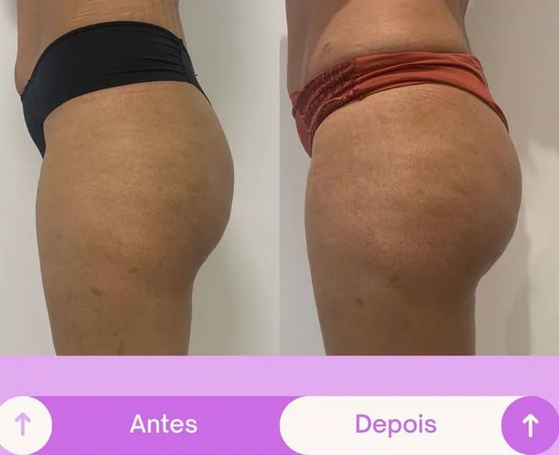
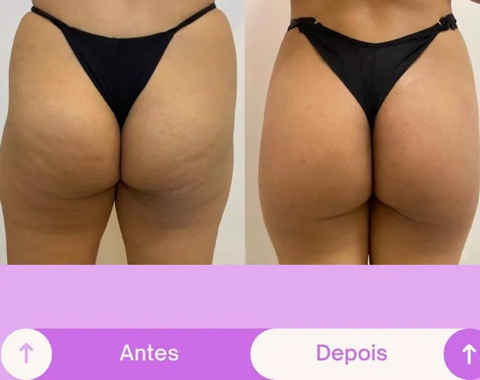
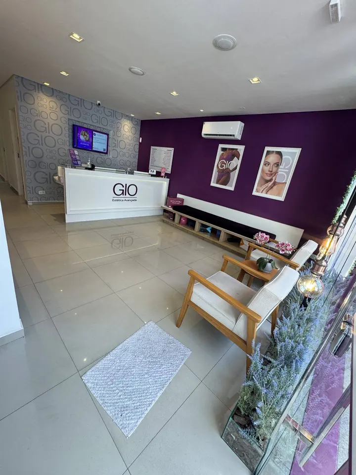
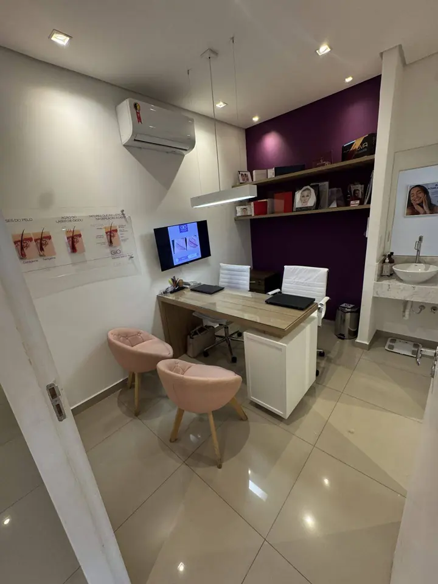
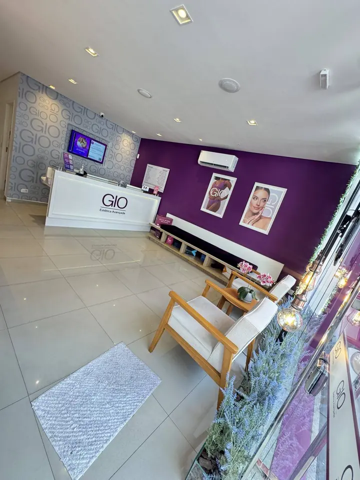
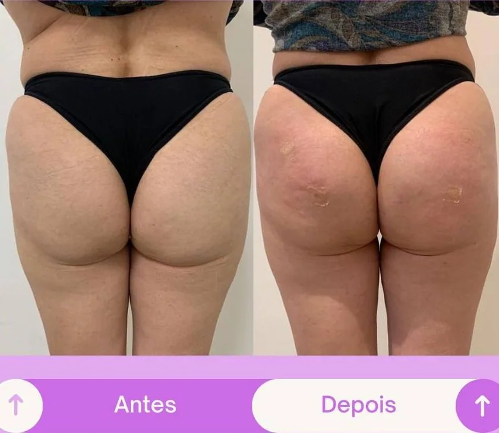
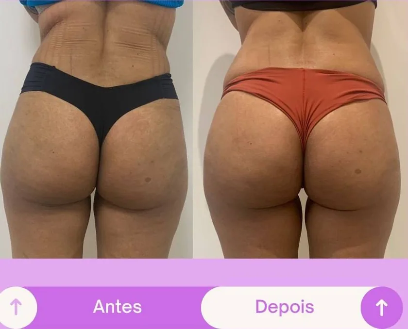
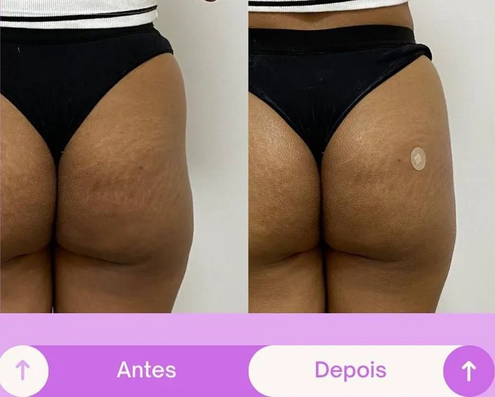
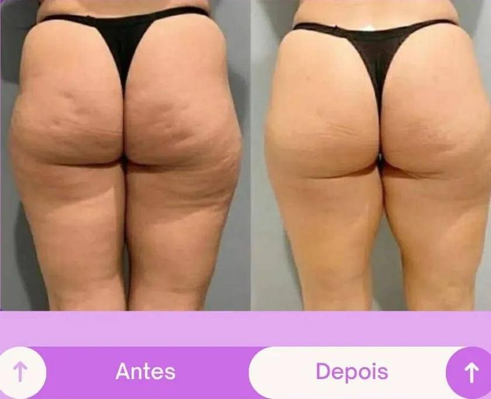
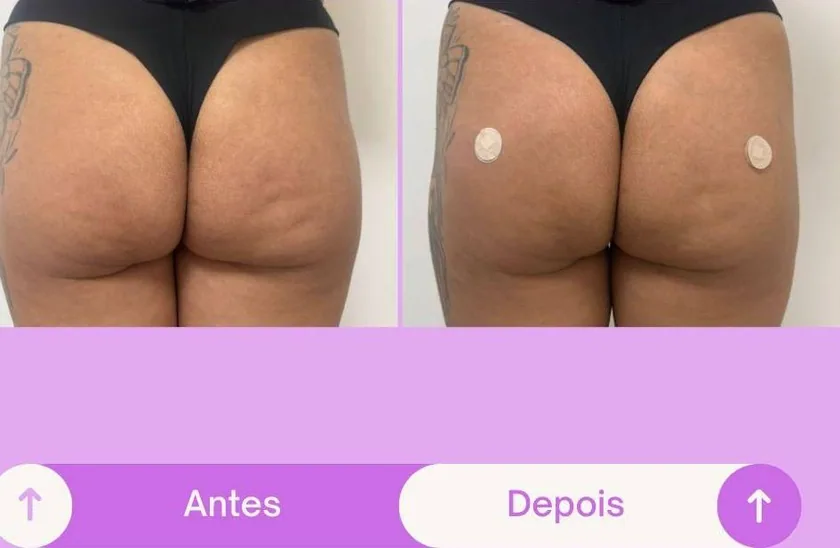

Mais volume
Preenche as regiões que parecem vazias e devolve o que o tempo ou o emagrecimento levaram. O bumbum volta a aparecer na roupa.
Mesmo que você não treine. Mesmo que já esteja há meses
na academia e o formato não venha.
Na Gio, uma avaliação descobre o que falta no seu glúteo, volume, sustentação, projeção ou equilíbrio, e dessa avaliação nasce um protocolo só seu.
O resultado que você percebe
Quer a calça jeans preenchida do jeito certo, sem aquela sobra de tecido atrás. Quer o vestido acompanhando a curva em vez de cair reto. Quer escolher o biquíni pelo modelo que ama, não pelo que disfarça.
Quer volume onde o glúteo parece vazio, firmeza onde a pele começou a ceder e projeção pra silhueta aparecer de perfil, e quer tudo isso com cara de seu. Um resultado que a amiga olha e pergunta se você mudou o treino, não um exagero que todo mundo percebe de longe.
É exatamente isso que o protocolo da Gio persegue: uma melhora planejada para sua estrutura, para sua queixa e pro corpo que você quer voltar a mostrar.


Harmonização glútea
Preenche as regiões que parecem vazias e devolve o que o tempo ou o emagrecimento levaram. O bumbum volta a aparecer na roupa.
Valoriza o perfil do corpo. É o famoso empinado, visível de lado, na foto e no espelho.
Melhora a sustentação da pele e reduz o aspecto murcho ou caído.
Redesenha a transição entre cintura, quadril, glúteo e perna. É o contorno que faz a silhueta.
Suaviza a diferença de formato ou volume entre um lado e o outro, aquela que só você nota mas nota sempre.
Trata o aspecto irregular da região em casos de flacidez ou celulite leve.
Entenda o seu corpo
Volume, músculo, contorno e firmeza são problemas diferentes.
O formato do glúteo vem da estrutura óssea, da distribuição de gordura e de onde os músculos se encaixam no seu corpo. A academia aumenta massa e melhora projeção, mas não muda sozinha todas as características da região.
Por isso tem mulher que treina pesado, aumenta carga, faz agachamento até não aguentar, e continua incomodada com a lateral funda, com a falta de projeção ou com o formato que não vem, e tem a mulher que emagreceu e viu o bumbum ir embora junto. A calça folgou atrás, a pele perdeu sustentação e o formato de antes começou a sumir.
O tempo também cobra a parte dele. O corpo reduz a produção de colágeno e elastina, a pele perde firmeza, e na menopausa a mudança hormonal acelera esse processo.
Quando tudo é tratado com a mesma sessão ou o mesmo aparelho, o que aumenta é a frustração, não o bumbum.
Antes de gastar de novo
O treino constrói músculo, mas não corrige sozinho a flacidez da pele, o volume que se perdeu, a assimetria ou o formato que a genética definiu.
Cada tecnologia tem uma função. Fechar 10 sessões antes de entender a causa do incômodo é pagar por algo que talvez nem trate a sua queixa.
O que funcionou pra ela pode não servir pra você. Estrutura, gordura, firmeza da pele e objetivo mudam de mulher pra mulher.
Mais produto não é resultado mais bonito. Distribuição, proporção e técnica é que fazem o contorno parecer seu.
Na Gio a ordem é outra. Primeiro a equipe entende o que incomoda você. Depois define o caminho.
Passo a passo
A equipe analisa volume atual, projeção, tônus muscular, firmeza da pele, distribuição de gordura, assimetrias e a proporção do glúteo com o resto do corpo. Você conta o que incomoda e mostra o resultado que quer alcançar.
Com o seu caso mapeado, as biomédicas identificam se ele pede volume, estímulo de colágeno, melhora de contorno, estratégia muscular ou uma combinação. Você sai sabendo o que foi indicado, por que foi indicado e qual evolução esperar.
A equipe organiza sessões, procedimentos e acompanhamento. Alguns resultados aparecem rápido. Outros evoluem conforme o seu corpo responde e produz colágeno.
A Gio acompanha a sua resposta ao protocolo, orienta os cuidados após cada procedimento e ajusta o plano quando necessário.
Indicações
A indicação final depende da avaliação realizada pela equipe técnica.
Perfil
Transparência
O protocolo não é a melhor escolha pra você que:
Linha exclusiva · GIO Signature Booty
Cada mulher chega com uma queixa. Por isso a Gio criou uma linha com quatro caminhos, e a avaliação define qual é o seu, ou qual combinação entrega o seu resultado.
Volume, projeção e contorno no mesmo dia.
Pra quem quer aumentar o bumbum sem cirurgia, corrigir diferença entre os lados ou dar projeção. O ácido hialurônico preenche onde falta e ainda hidrata a região por dentro, deixando a pele mais firme.
Feito com anestesia local. Você sai vendo a mudança e leva as orientações da primeira semana, quando a região pode inchar ou marcar.
O efeito lifting que esculpe a curva sem mudar quem você é.
Pra quem quer o bumbum mais empinado e desenhado, com evolução progressiva. Levanta, firma e define o contorno, com pouco tempo de recuperação e resultado que vai se construindo semana a semana.
Firmeza e definição pra quem não quer muito volume.
Estimula a musculatura e melhora a qualidade da pele, pro bumbum ficar mais firme, tonificado e definido. É o caminho de quem treina e quer potencializar o esforço da academia, e de quem quer realce sem aumentar tamanho.
O seu corpo produz o próprio resultado.
Pra quem tem flacidez e sente o bumbum murcho ou caído. O bioestimulador ativa a produção natural de colágeno, que devolve firmeza e sustentação com efeito lifting progressivo e duradouro. O resultado começa a aparecer a partir de 30 dias e segue evoluindo por meses.
Resultado bem indicado
O resultado depende do seu ponto de partida, do protocolo indicado e da resposta do seu organismo.



Osasco · Rochdale
A Gio é uma clínica de estética da Rede Gio em Osasco, com uma carteira de clientes construída ao longo de anos de atendimento na região.
À frente da gestão está Danúbia, que acompanha de perto a experiência de cada cliente e faz questão de um atendimento acolhedor, organizado e transparente.
A clínica tem equipe técnica, estrutura e protocolos pensados pra cada mulher ser avaliada de forma individual, sem indicação genérica.
Você não precisa chegar sabendo qual procedimento quer. Basta contar o que incomoda, mostrar o resultado que deseja e tirar as suas dúvidas. A equipe avalia e apresenta os caminhos que fazem sentido pro seu corpo.
Resultados reais
Resultados de mulheres que passaram pela Gio





Os resultados são individuais e variam conforme o organismo, o protocolo e as características de cada paciente. Imagens divulgadas com autorização.
Quem já fez
Avaliações reais de clientes no Google
Dúvidas
Os protocolos injetáveis são feitos com anestesia local para você ficar confortável durante a aplicação. A sensibilidade varia conforme o procedimento e de pessoa para pessoa.
Sim. Alguns procedimentos podem causar inchaço, sensibilidade ou pequenos hematomas temporários. Você recebe todas as orientações de recuperação e sabe exatamente o que esperar nos primeiros dias.
Depende do protocolo. Com ácido hialurônico, a mudança inicial já aparece após a aplicação e se confirma quando o inchaço diminui. O bioestimulador evolui conforme o organismo produz colágeno. O Perfect leva em torno de três meses pra consolidar.
Não. Cada procedimento tem uma duração e pode pedir manutenção. Na avaliação, a equipe explica quanto tempo o resultado costuma permanecer e como funciona a manutenção do seu protocolo. A Gio não trabalha com biopolímero permanente.
O protocolo é planejado para sua estrutura e pro resultado que você quer. A equipe calcula volume, distribuição e proporção para valorizar o seu corpo, não para criar exagero.
Não. Para quem treina, o protocolo completa a musculatura construída. Para quem não treina, existem caminhos direcionados para volume, firmeza, projeção e contorno. A avaliação mostra o que serve pro seu momento.
Você conta o resultado que deseja, mas a indicação vem da avaliação técnica. A equipe sugere outro caminho quando entende que ele é mais adequado ou mais seguro pra sua queixa.
O investimento depende do protocolo, da quantidade de produto, das sessões e das etapas indicadas pra você. Depois da avaliação, a equipe apresenta o planejamento completo e explica os valores antes de qualquer decisão sua.
Fale com a nossa equipe pelo WhatsApp e agende a sua avaliação individual.
A decisão
Escolher a calça pensando em disfarçar, deixar o biquíni que ama na gaveta e seguir testando treino e sessão avulsa sem saber o que de fato precisa ser tratado. Daqui a um ano, o espelho mostrando a mesma coisa.
Passar por uma avaliação individual, entender se a sua queixa é volume, firmeza, projeção, textura ou assimetria, e receber um protocolo planejado pro seu corpo, com valores claros antes de qualquer decisão.
A avaliação não te obriga a fazer nada. Ela existe pra você decidir com informação, não no escuro.
Clínica Gio · Rede Gio · Osasco
Protocolos naturais são construídos. Chegue no verão com a autoestima e o corpo que você deseja.
Passo 1 de 4
A avaliação é presencial, na Gio em Osasco. Você consegue vir até a clínica?
Passo 2 de 4
Os protocolos de harmonização glútea da Gio partem de R$ 1.500 e o valor exato do seu é apresentado na avaliação. Como você está em relação a isso?
Passo 3 de 4
Sua avaliação é individual e a agenda da semana tem poucas vagas. Se a gente encontrar um horário, você comparece?
Presente da Gio: fechando o seu protocolo na avaliação, você ganha uma revitalização facial ou uma massagem relaxante, você escolhe.
Passo 4 de 4
Como posso te chamar?
Me conta seu nome pra gente continuar.
A avaliação da Gio é presencial
Por enquanto a gente só consegue cuidar de você aqui na clínica, em Osasco. Se em algum momento você puder vir até a região, vai ser um prazer te receber. Guarda a gente no Instagram: @giorochdale
Perfeito! Agora é só chamar a gente.
Abrimos o WhatsApp da Gio com a sua mensagem pronta. É só enviar que a equipe encontra o melhor horário da semana pra sua avaliação.
Abrir o WhatsAppE lembra: fechando o protocolo na avaliação, a revitalização facial ou a massagem relaxante é por nossa conta.